Префектура Канагава · Ёкогама · сакэ и вино
«Ёкогама Кимидзимая»: винная лавка с 1892 года и зал японского вина
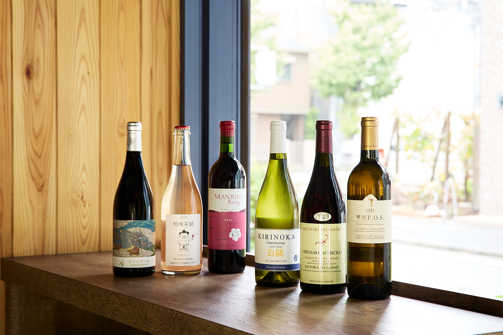
Магазин «Ёкогама Кимидзимая» торгует напитками с 1892 года и больше века ищет сакэ и вино, которые хорошо пьются за едой. В 2024 году рядом открылся «Нихон будокан», зал, где продают только японские вина.
Магазин
Сакэ и вино к столу
«Ёкогама Кимидзимая» открылась в Ёкогаме в 1892 году. Нынешний хозяин представляет четвёртое поколение семьи. В 1980-х годах он начал знакомиться с виноделами за границей, и магазин стал сам ввозить вина из Франции. Постепенно лавка превратилась в магазин напитков к еде: здесь собирают сакэ, сётю и вино, которые выросли из местной кухни и местного климата.
Магазин ищет производителей, которые берегут сырьё и работают с особенностями своей земли. Кимидзимая проводит дегустации и встречи в Японии и за её пределами, чтобы о японских напитках узнало больше людей.
Нихон будокан
Зал японского вина
В 2024 году магазин открыл «Нихон будокан», отдельный зал японского вина: так в Кимидзимае решили поддержать виноделов страны. В 2026 году здесь было около 450 вин примерно от 120 виноделен, в том числе редкие бутылки, которые почти не попадают в обычную продажу.
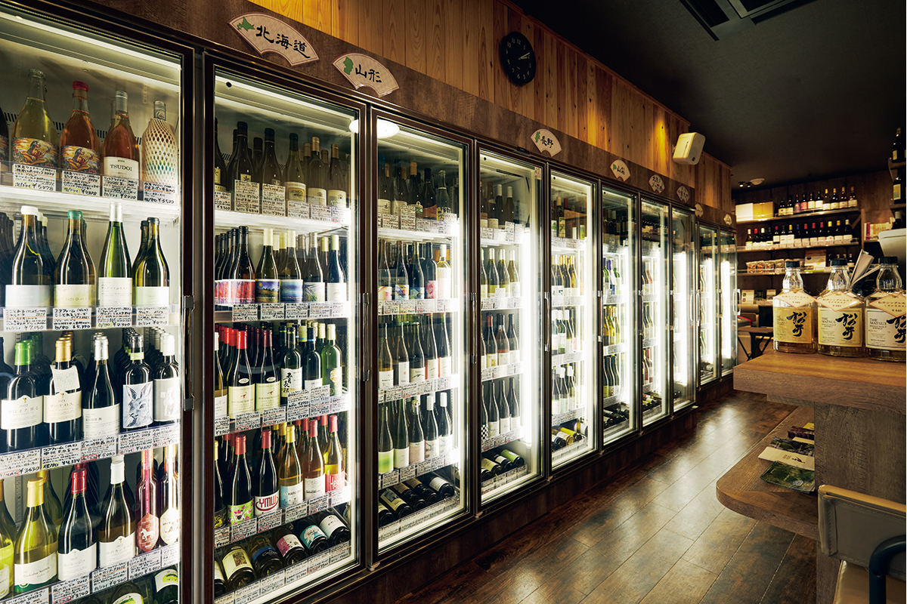
Управляющий и сомелье зала держится одного правила: продавать только вкусное вино.
«Я стараюсь не навязывать свой вкус, а предлагать вино, от которого гость улыбнётся. Подстроиться под каждого человека и через вино рассказать о виноделе и о земле, где оно выросло, вот моя работа»
управляющий «Нихон будокан»
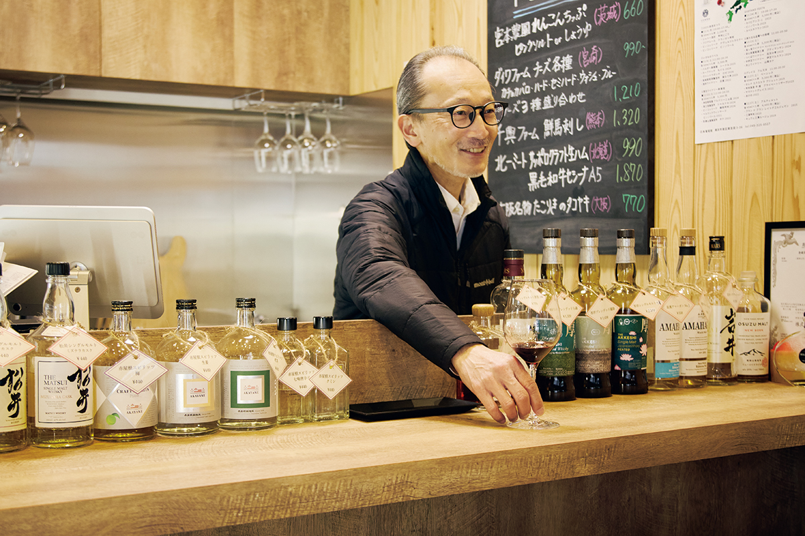
В зале есть стойка для дегустации: в любой день здесь наливают 6–8 вин за плату, а во вторую и четвёртую субботу месяца устраивают дегустации на заданную тему. Иногда по бокалу дают вина, которые подают в дорогих отелях. Купленную бутылку можно открыть прямо здесь.
Управляющий советует следить за новыми сортами. Среди белых всё заметнее совиньон блан и пино гри, среди красных вина из гибридов японского дикого винограда, например «Сёкоси» и «Яма-совиньон».
«Нихон будокан»
- Адрес
- префектура Канагава, Ёкогама, район Минами, Минами-Ёсида-тё, 3-36
- Телефон
- +81 45-325-8527
- Часы работы
- понедельник–четверг 11:00–19:30, пятница и суббота до 21:00, воскресенье и праздники 10:00–18:00
- Выходные
- среда
- Сайт
- kimijimaya.co.jp
Подборка 2026
Шесть японских вин
В 2026 году зал советовал такие вина. Часть из них выпускают малыми партиями, поэтому они быстро заканчиваются.
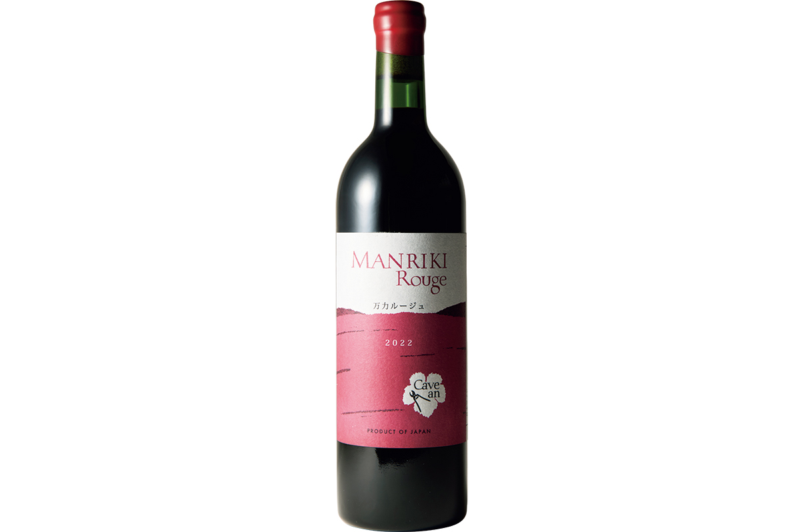
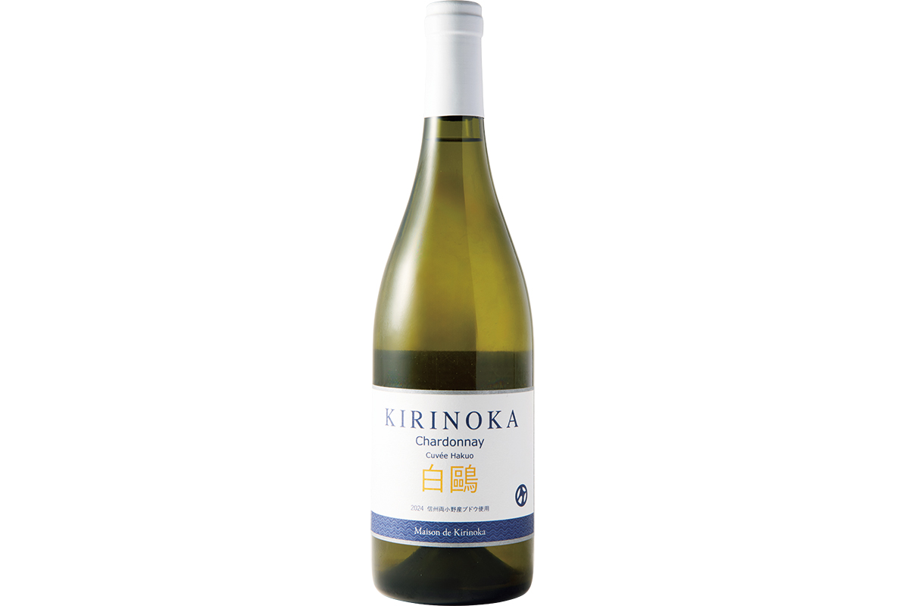
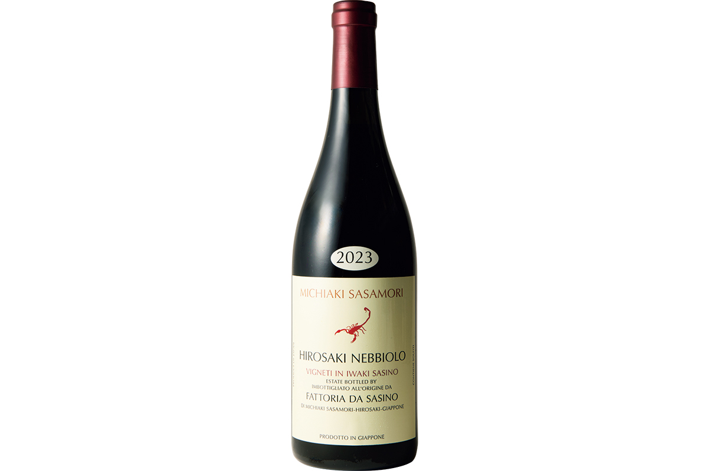
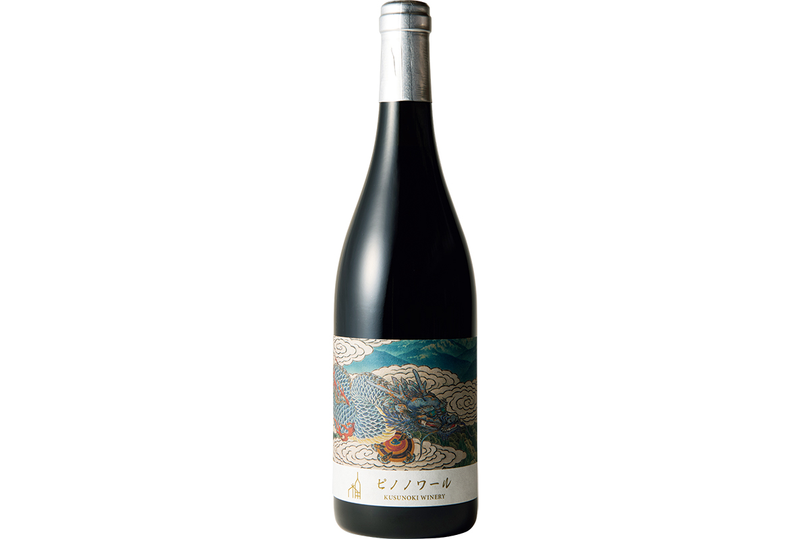
Среди шести вин есть и местное. Kentoku Winery, единственная винодельня города Сагамихара в Канагаве, делает вино с 2023 года. Её слабоигристое вино урожая 2025 года сделано в основном из сорта «Арумо нуар» с добавкой санджовезе и сиры, его пьют хорошо охлаждённым, а во вкусе зелёное яблоко и свежая кислинка.
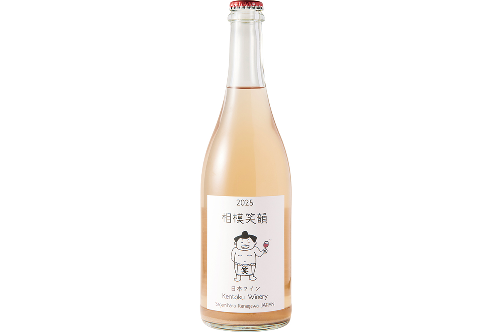
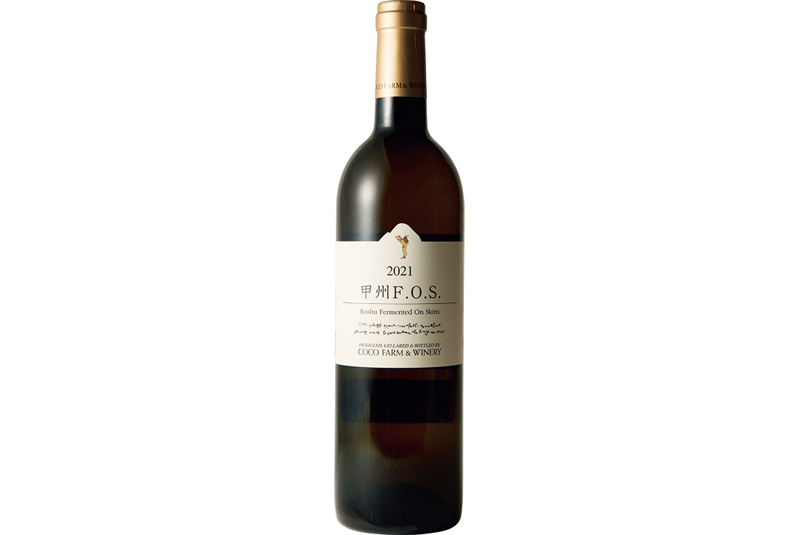
Сакэ и спиртное
Что советовали в 2021 году
В основном магазине так же внимательно выбирают сакэ. Некоторые марки делают только для Кимидзимаи. Сакэ «Сёбудани» варит «Хонда сётэн» из префектуры Хёго только из риса ямада-нисики с одного участка. В магазине советуют пить его двумя способами: охлаждённым, как белое вино, из бургундского бокала, или подогретым до 48 °C, когда вкус становится полнее. В 2021 году бутылка 720 мл стоила 3300 иен.
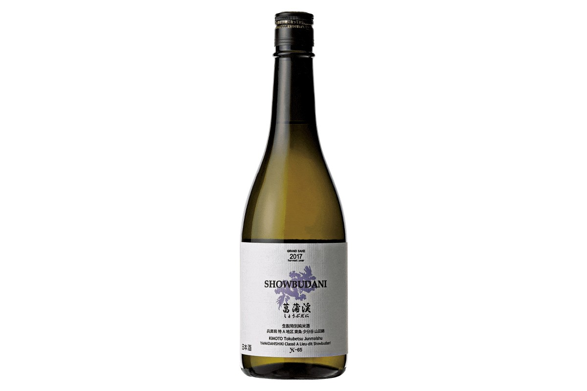
«Татэнокава Ооия» тоже сделали для магазина. Это дзюммай дайгиндзё из старинного риса камэ-но о, который вырастили без пестицидов. Его советуют чуть охладить, перелить в графин, дать немного согреться и пить из небольшого винного бокала. А «Курикомаяма» из префектуры Мияги варят из столового риса сасанисики: сакэ лёгкое, с прозрачной сладостью, и его можно пить и холодным, и горячим.
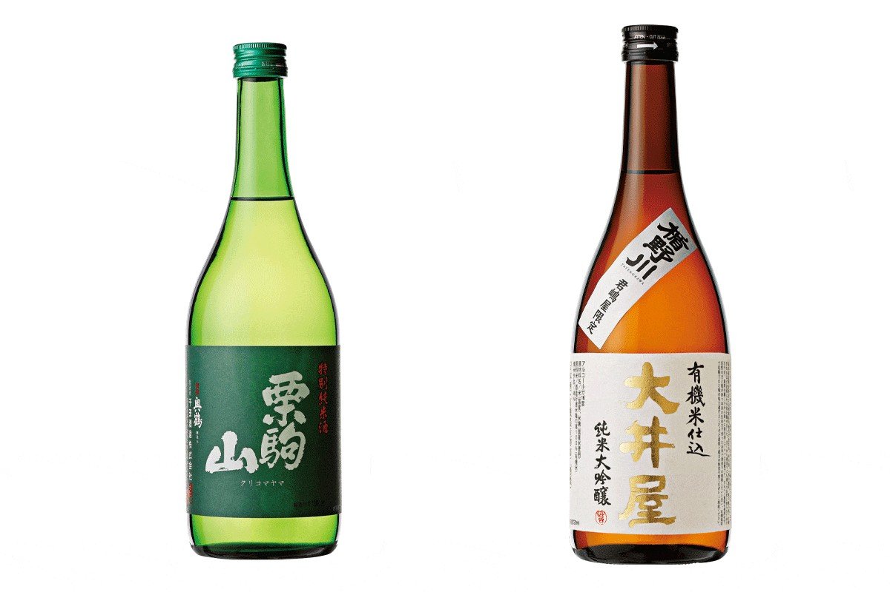
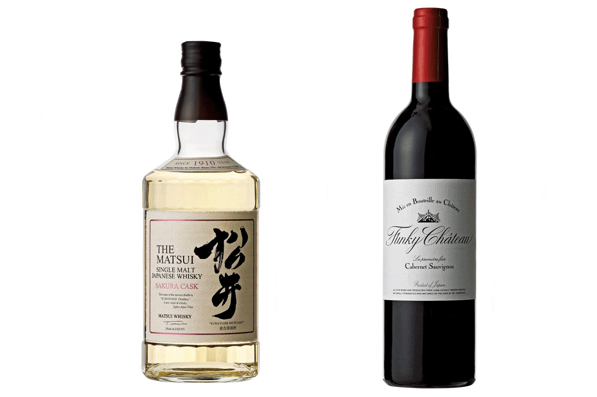
Среди японских вин и спиртного в 2021 году магазин отмечал виски «Мацуи Сакура каск»: в нём за солодовым ароматом слышна вишня, и пить его советуют со льдом после ужина. Красные вина Funky Chateau в магазине ценят за насыщенный фруктовый вкус мирового уровня и японскую сдержанность.
«Ёкогама Кимидзимая»
- Адрес
- префектура Канагава, Ёкогама, район Минами, Минами-Ёсида-тё, 3-30
- Телефон
- +81 45-251-6880
- Часы работы
- 11:00–19:30, в субботу с 10:00
- Выходные
- воскресенье
- Сайт
- kimijimaya.co.jp
Фото: Сихо Акияма, Норихито Судзуки.